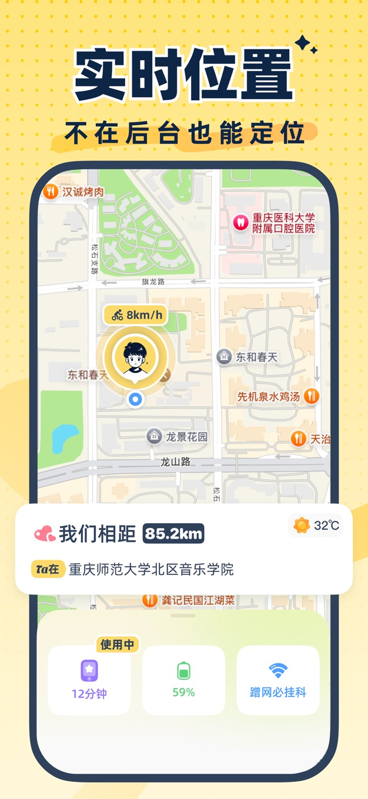
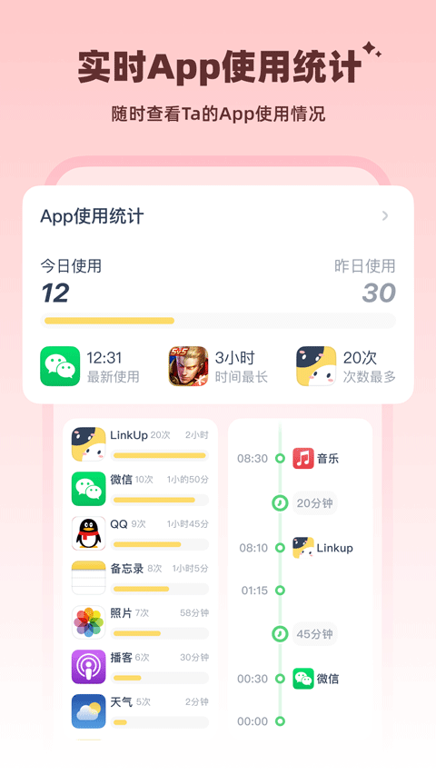

LinkUp 是什么？从零到跟另一半共享位置，五分钟上手全流程
第一次接触 LinkUp 的小白友好入门——从下载安装到跟对方绑定成功，手把手带你跑通双向授权的位置共享，再告诉你三个最值得先碰的功能。
这篇文章能带你从完全不懂到真正用起来，不需要任何基础。五分钟之内，你就能跟想共享位置的那个人把 LinkUp 跑通。
它到底是干嘛的？一个生活化类比
想象一下：你跟另一半各自拿出手机，打开同一个应用，互相扫一下或者输一串数字，然后——你们就能在地图上看到彼此现在在哪儿、刚才走了哪条路、今天手机都用了些什么。不是你偷偷看 TA 的，也不是 TA 偷偷看你的，两个人一起点头了，数据才互相打通。
这就是 LinkUp 跟市面上那些单方面监控软件的本质区别——去它的官网看一眼产品介绍页就能感受到，双向授权不是营销口号，是实打实的底层逻辑：绑定关系要双方同意、权限要双方各给各的、想撤随时能撤——任何一方单独操作，另一方都不会被蒙在鼓里。
说直白点，这就是一款专门给亲密关系设计的「互相看见」工具。情侣、家人之间用的多，核心场景就是让你知道「TA 在哪儿、安不安全」，同时 TA 也知道你在哪儿。

五分钟上手：从下载安装到第一次跑通
好，说干就干。最短路径五步走：
第一步：下载安装，你们俩都得装
这是 LinkUp 最特殊也最容易被忽略的一点——你装了没用，对方也得装。不是那种「我装了就能偷偷看对方」的软件，双方都要注册、都要登录账号。应用商店搜名字就能找到，或者直接从官方下载入口拿安装包，iOS 和安卓都覆盖。
第二步：选一种绑定方式，把你们俩连起来
LinkUp 给了好几种绑定方式：面对面的话扫个码最快；异地的话用「匹配码」最方便——就是应用给每个账号生成的一串数字，你把你的码用微信发给对方，TA 在添加好友页面输入这串数字，然后对方要在自己手机上点「同意」，绑定关系才算生效。
注意这个细节：谁输码，另一头就会收到绑定请求，需要点同意。不是你这边输入完就完事儿了，是真的双方各走一遍确认。
第三步：第一次授权，别跳
绑定成功后别急着看地图。LinkUp 会依次向你们俩要几类权限：位置权限（必须设成「始终允许」，否则后台不刷新）、通知权限（绑定请求和报备提醒靠推送过来）、手机使用记录权限（想看对方用了什么 App 就得开）。每一个都要点允许，少一个功能就少一块。
第四步：看看地图，第一次跑通了
两边权限都给完，回到首页——如果一切正常，你会看到地图上出现两个蓝点，一个是你自己，另一个就是对方。位置会持续刷新，对方移动的时候蓝点也跟着动。
如果地图上没出现对方的点，先别慌，十有八九是 TA 那边的位置权限还没给到。让 TA 打开设置检查一下，设成「始终允许」基本就好了。
第五步（可选）：把通知开起来
想让对方到了某个地方、或者手机用得太久的时候你能收到提醒，去应用内的自动报备页面把对应的开关打开。解锁超标、长时间使用某些应用，这些事件触发的时候你会先收到一条推送通知，不用盯着地图刷新。
就这五步。走完你就已经能正常用了。
上手后先玩这三个功能
跑通之后，LinkUp 里最值得你先碰的三个地方：
实时位置 + 轨迹回放
地图页能看到对方现在的位置，拉一下时间滑块能回放过去某段时间的移动轨迹——比如昨天下午三点到五点 TA 从哪儿到了哪儿。这个功能最直观，也是大多数人装这款应用的第一诉求。
你会发现：轨迹不是每隔几分钟才更一次，而是连续的折线。对方走路、坐车、停下来，地图上的速度和方向都会跟着变。
App 使用记录：时间点流水 vs 单应用累计
打开手机报告页，往下拉有个「应用使用」区块。这里有两种读法：
- 时间点流水：「20:36 打开抖音，用了 6 分钟」——几条几分打开了什么、用了多久，逐条列出来；
- 单应用累计：「微信今日 2 小时 37 分」——按应用汇总当天的总时长和打开次数。
这两个视图配合看，能拼出对方一天的手机使用画像。你也不用盯着，想看的时候进去翻账本就行。

自动报备：事件触发就推
想更省心？把自动报备开起来。比如对方每天晚上超过某个时间还在刷手机，或者解锁频率异常，你不用主动去查，推送通知会直接到你手机上。相当于有人帮你盯着「TA 的手机使用是不是正常」，你只需要看一眼通知要不要去关心一下。具体哪些事件能触发报备、怎么调节灵敏度，去 LinkUp文档 里找自动报备的章节就能看到完整参数表。
小白的三个常见疑问
Q1：我想取消订阅但找不到入口？
iOS 端的自动续订开关不在 LinkUp 应用里，要去 iPhone 设置 → 顶部点你的姓名 → 媒体与购买项目 → 查看账户 → 订阅 → 找到 LinkUp → 取消订阅。而且有个关键时间点：要在到期前至少 24 小时关掉，过了这个点当期已经进入扣费流程了。安卓端的话以应用内提示为准，有的支付渠道能在第三方扣款平台里关授权。
Q2：为什么有时候地图上对方的位置停在那里不动？
位置不刷新的常见原因有几个：对方那边的位置权限被系统回收了（iOS 偶尔会做这个）、对方在地铁或信号差的地方、或者对方暂时关闭了位置共享。如果持续不刷新，让对方去权限设置里确认一下，或者在 LinkUp 里关了共享再开一次。
Q3：我不想让对方看到某些数据，能单独关掉吗？
能。LinkUp 的权限是按功能分开的——位置、轨迹、应用记录、通知报备，每一项都可以单独开或关。而且你关了某个权限，对方那边会收到一条通知，不会让对方以为是应用故障。这就是它设计上的「透明双向」，不让任何人有被蒙在鼓里的感觉。
LinkUp 最聪明的地方，就是从产品机制上把「互相看见」这件事做透了——你能看到什么，永远取决于对方同意了你看到什么。没有灰色地带，也没有一方说了算的场景。
想更深入玩的话，先试试「轨迹回放」的时间筛选功能，把自动报备的几个开关都开起来看看效果。关于双向授权机制、权限对应表这些细节说明，我在 GitHub、Gitee、GitCode 三个仓库都留了备份，哪个访问方便就看哪个。